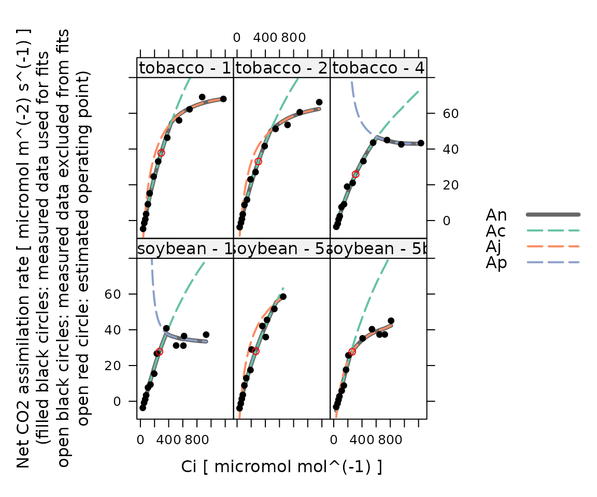
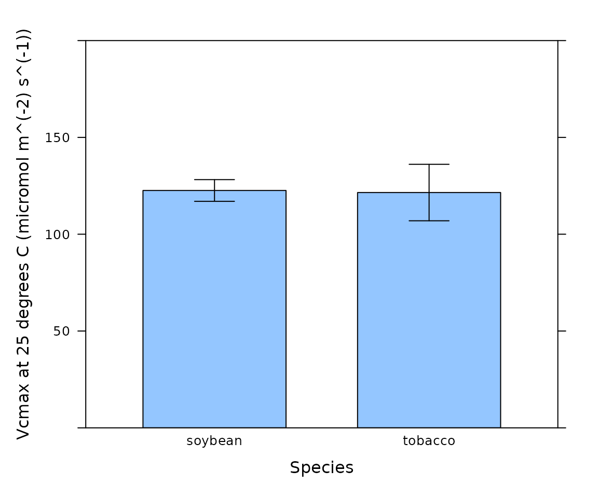

Overview
PhotoGEA (short for photosynthetic gas exchange analysis) is an R package that provides a suite of tools for loading, processing, and analyzing photosynthetic gas exchange data. See Lochocki, Salesse-Smith, & McGrath (2025) for more information.
This vignette is designed to be viewed online; some of the links may not work properly in a local version. To see the online version, visit https://eloch216.github.io/PhotoGEA/articles/PhotoGEA.html.
Installing PhotoGEA
PhotoGEA is available on CRAN, so the easiest way to
install the latest release is to type the following from within an R
terminal:
install.packages('PhotoGEA')An Example: C3 CO2 Response Curves
As an example, we will read data from two Licor Li-6800 log files
that contain several A-Ci curves measured from tobacco and soybean
plants, fit a model to each response curve, and then plot some of the
results. This is a basic example that just scratches the surface of what
is possible with PhotoGEA.
(Note: When loading your own files for analysis, it
is not advisable to use PhotoGEA_example_file_path as we
have done in the code below. Instead, file paths can be directly
written, or files can be chosen using an interactive window. See the Analyzing C3
A-Ci Curves vignette for more information.)
Fitting the Curves
The following code can be used to read the data and fit each curve:
# Load required packages
library(PhotoGEA)
library(lattice)
# Define a vector of paths to the files we wish to load; in this case, we are
# loading example files included with the PhotoGEA package
file_paths <- c(
PhotoGEA_example_file_path('c3_aci_1.xlsx'),
PhotoGEA_example_file_path('c3_aci_2.xlsx')
)
# Load the data from each file
licor_exdf_list <- lapply(file_paths, function(fpath) {
read_gasex_file(fpath, 'time')
})
# Get the names of all columns that are present in all of the Licor files
columns_to_keep <- do.call(identify_common_columns, licor_exdf_list)
# Extract just these columns
licor_exdf_list <- lapply(licor_exdf_list, function(x) {
x[ , columns_to_keep, TRUE]
})
# Combine the data from all the files
licor_data <- do.call(rbind, licor_exdf_list)
# Define a new column that uniquely identifies each curve
licor_data[, 'curve_id'] <-
paste(licor_data[, 'species'], '-', licor_data[, 'plot'] )
# Organize the data
licor_data <- organize_response_curve_data(
licor_data,
'curve_id',
c(9, 10, 16),
'CO2_r_sp'
)
# Calculate the total pressure
licor_data <- calculate_total_pressure(licor_data)
# Calculate temperature-dependent values of C3 photosynthetic parameters
licor_data <- calculate_temperature_response(licor_data, c3_temperature_param_bernacchi)
# The default optimizer uses randomness, so we will set a seed to ensure the
# results from this fit are always identical
set.seed(1234)
# Fit all curves in the data set
aci_results <- consolidate(by(
licor_data,
licor_data[, 'curve_id'],
fit_c3_aci,
Ca_atmospheric = 420
))When this document was generated, evaluating this code required the following amount of time:
#> user system elapsed
#> 16.559 0.050 16.608The timing results may vary depending on the particular machine used to run the code. Nevertheless, this is a small time investment for an advanced algorithm that uses derivative-free optimizers for robust fitting and calculates nonparametric confidence intervals to determine which estimated parameter values are reliable.
This example contains 13 commands, so it certainly isn’t short;
however, a close look reveals that much of the commands are general and
would apply to any set of C3 response curves. In
fact, only a few parts would need to be modified, such as the list of
files to read, the curve identifier, and the value of mesophyll
conductance. While using PhotoGEA, you are encouraged to
copy this example and any others to use as the base of your own scripts;
work smarter, not harder!
Viewing the Results
Having fit the response curves, it is also possible to view the fits,
the parameter estimates, and their confidence intervals.
PhotoGEA provides several tools for doing this, which
enable users to check the fit quality and ensure that only reliable
parameter estimates are used in subsequent analysis.
We can plot the measured values of net assimilation (black circles),
the fitted values of net assimilation (An), and each of the
limiting assimilation rates calculated during the fitting procedure: the
Rubisco limited rate (Ac), the RuBP regeneration limited
rate (Aj), and the triose phosphate utilization (TPU)
limited rate (Ap). This is a basic quality check where we
can make sure that the fits make sense and look believable:
plot_c3_aci_fit(aci_results, 'curve_id', 'Ci', ylim = c(-10, 80))
In this figure, some curves are missing one or more of the potential limiting rates. When this occurs, it means that no points in the curve were found to be limited by that process.
Another way to check the overall quality of the fits is to plot the residuals, which should be randomly distributed:
xyplot(
A_residuals ~ Ci | curve_id,
data = aci_results$fits$main_data,
type = 'b',
pch = 16,
grid = TRUE,
xlab = paste0('Intercellular CO2 concentration (', aci_results$fits$units$Ci, ')'),
ylab = paste0('Assimilation rate residual (measured - fitted)\n(', aci_results$fits$units$A, ')'),
)
For individual parameters, we can take a look at the best-fit values
and the associated confidence intervals. Here is an example showing
values of Tp_at_25, the maximum rate of triose phosphate
utilization.
aci_results$parameters[, c('curve_id', 'Tp_at_25_lower', 'Tp_at_25', 'Tp_at_25_upper')]
#> curve_id Tp_at_25_lower Tp_at_25 Tp_at_25_upper
#> 1 soybean - 1 7.664314 8.167682 8.609374
#> 2 soybean - 5a -Inf NA Inf
#> 3 soybean - 5b -Inf NA Inf
#> 4 tobacco - 1 7.597912 NA Inf
#> 5 tobacco - 2 12.100282 NA Inf
#> 6 tobacco - 4 9.901601 10.282169 10.671615Some of these estimates have an upper limit of Inf and a
best estimate of NA. A comparison with the fits shown above
indicates that for these curves, insufficiently many points were found
to be TPU-limited, preventing a reliable estimate of
Tp_at_25.
It is also possible to plot the best-fit values of a parameter
averaged across subsets of the data in a bar chart, where the error bars
represent the standard error of the mean. Any values of NA
will be excluded. Here we plot values of Vcmax at 25
degrees C for each species.
barchart_with_errorbars(
aci_results$parameters[, 'Vcmax_at_25'],
aci_results$parameters[, 'species'],
xlab = 'Species',
ylab = paste0('Vcmax at 25 degrees C (', aci_results$parameters$units$Vcmax_at_25, ')'),
ylim = c(0, 200)
)
Learning More
The PhotoGEA package includes extensive documentation,
and more articles are being added all the time:
-
Publication Gallery:
Includes a list of publications that describe or use
PhotoGEA, along with links to their corresponding analysis scripts. - Analysis guides:
- Analyzing C3 A-Ci Curves (This example is more detailed than the analysis demonstrated here.)
- Analyzing C4 A-Ci Curves
- Analyzing Ball-Berry Data
- Analyzing TDL Data
- Analyzing Mesophyll Conductance Data
- General
PhotoGEAadvice:-
Creating
Your Own Processing Tools: Discusses how to create functions
compatible with
PhotoGEAthat apply new types of processing. -
Combining
PhotoGEA With Other Packages: Discusses how to create wrappers for
functions from other packages to extend the processing capabilities of
PhotoGEA. -
Developing a
Data Analysis Pipeline: Discusses how
PhotoGEAprovides functionality for all parts of a data analysis pipeline, including loading and validating the data – and how it can help save your time and improve the reproducibility of your data analysis! -
Working
With Extended Data Frames: Discusses how to work with extended data
frames, which are a critical part of
PhotoGEA. -
Frequently Asked
Questions: Provides answers to frequently asked questions about
PhotoGEA.
-
Creating
Your Own Processing Tools: Discusses how to create functions
compatible with
- General gas exchange advice:
- Guide to Licor LI-6800 User Constants: Discusses how to include metadata in log files when using a Licor LI-6800 gas exchange measurement system, and provides advice for dealing with data sets that do not contain user constants.